Implementing a Case Management Application
Case Management is complex, so there is no single process for creating a Case Management Application that is perfectly applicable to all Cases. There are, however some general guidelines to follow when creating the application.
At minimum, a functional Case Management Application will require that you configure the following objects:
- Case Definition: The Case definition provides the shared data context for all of the objects in each case.
- Form(s): One or more Forms will be needed, with Form fields that set and/or display the Case properties.
- Knowledge Views: One or more knowledge views will be needed to show a list of Forms, documents, or process that are related to the case instance. Often, these knowledge Views are used to display the lists as portlets in the case Dashboard. Additionally, a Knowledge View that returns Case instances will be needed to open the case Dashboard when the instance is selected from the Knowledge View results.
- Dashboard: A case Dashboard will display all of the objects associated with the case, such as Forms or Documents, usually via knowledge Views. The Dashboard will also provide a method to submit new Forms or otherwise begin new processes related to the Case, usually via navigation buttons added to the dashboard. A Case Dashboard displays only the objects related to a single case.

The initial versions of Process Director that supported Case management (v3.82 - v4.01) used Workspaces to display Case folders/objects. This UI convention was superseded by the Dashboard object in v4.02 and higher, as the dashboard provides a more versatile method of presenting case objects.
For illustrative purposes, this topic will display elements from a simple, notional Case Management Application, with examples of how the various objects are configured to work with the Case. In our sample case, we will track an automobile insurance claim, and will link three different processes as part of that claim:
- Claims Reporting: A Claim form is filled out, a claims administrator will review it, and an adjuster will be assigned. Ultimately, the claim will be processed and paid, or denied.
- Insurance Adjuster's Inspection and Report: An adjuster will inspect the damage, and make a report which will be reviewed by the claims administrator.
- Repair Estimate Approval: A repair estimate will be admitted, and the claims administrator will approve or deny it.
As we progress through this topic, we'll look at how these different processes are linked to the Case.
Case Definition #
The starting point for any Case management Application is the Case definition. As mentioned previously, the Case definition supplies the data context that all objects in the case will share. With that in mind, the first question that must be answered is, "What data should be stored as Case properties?"
Most obviously, the case should have a Sequence Number, or some other unique property that identifies a specific case instance. Beyond that, however, configuring the Case definition's properties requires some forethought about the property data that needs to be stored. The properties should include any data that is specific to the case instance, such as the date the case was started, or finished. Also, the Case will store data as it exists as the specific point in time that the Case is created or the data is entered. If there is data that will change over time, such as an address, or the name of a point of contact, then that data is a good candidate for inclusion as a case property as well. The sample auto claims case for this topic illustrates the type of data that should be stored in the case instance.
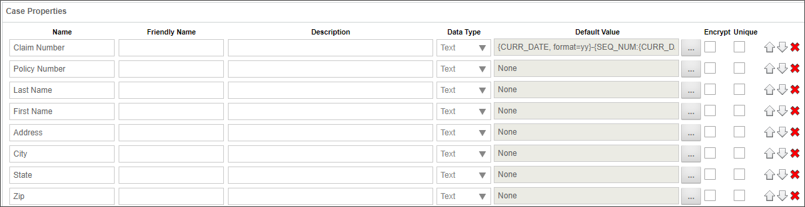
In this example, the Auto Claim case contains a Claim Number property, which uses a formatted sequence number as a default value, and which creates a unique identifier for the Auto Claim instance. A number of the properties, such as the VIN number, make, model, and year, of the vehicle, as well as the Customer's contact information, contain information that will change over time. For instance, over the course of several years, the customer may add or remove vehicles for the policy, or may move to a different address. Finally, there are fields such as the Adjuster's Name or the repair estimate amount that are only relevant to this specific Case instance.
In the real world, you probably won't configure your Case definition properly on the first pass. As you create the case, you'll probably run into other data items that you'd like to store as case properties. So, building the Case definition will be an iterative process, where you'll continuously refine your Case properties as you build the Forms and processes that will be part of the case.
Dashboard #
The Dashboard section of the Case Definition enables you to specify a dashboard to use to display the case folder.
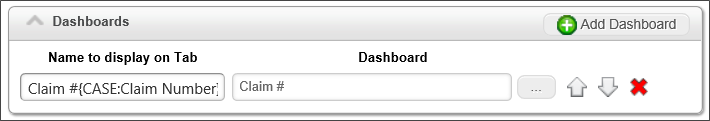
With the Case Dashboards, whenever a user opens a case instance, the Dashboard appears automatically, displaying all of the associated files, Forms, documents, etc., that are relevant to the case.
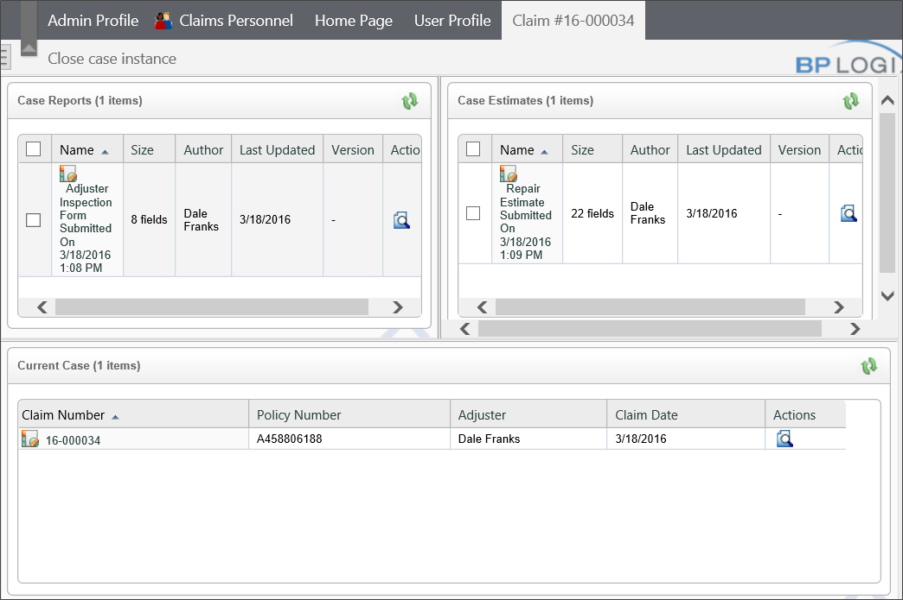
When you are in Case context the User Profile box automatically updates to track the case that you're in. When you have completed your work on the case, simply click the Leave Case button to exit the Case context.
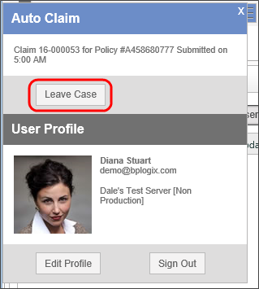
Additional buttons can be added to the Case dashboard, such as buttons to open Forms, or display other related Knowledge views.
To learn more about creating and configuring Dashboards, please see the Dashboards topic.
Forms #
With the Case Management feature, Form definitions have a property located in the Options section of the Form Options tab, called, Case Definition to create an instance for (optional). When you set a Case definition for this property, the Form, when submitted, will create a new Case instance. All subsequent processes, Forms, etc. that are created in the context of the case will be linked to the Case instance.
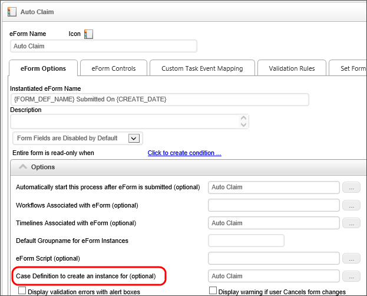
The Case Management functionality also provides some new configuration options for Form fields. The field properties in a Form definition are enabled to use a Case property as a default value and/or to save the field value as a Case property.
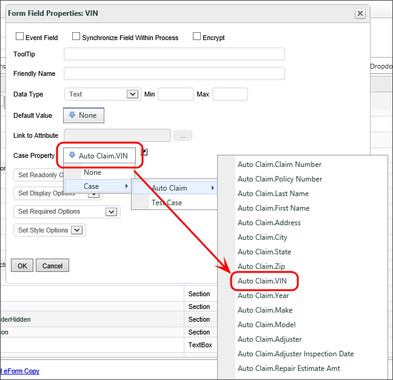
The Auto Claim Form for our sample auto claims application uses case properties extensively. In our sample application, policyholder information containing the customer's contact and vehicle information are extracted from an external data source, and filled into the form automatically when the user enters a policy number.
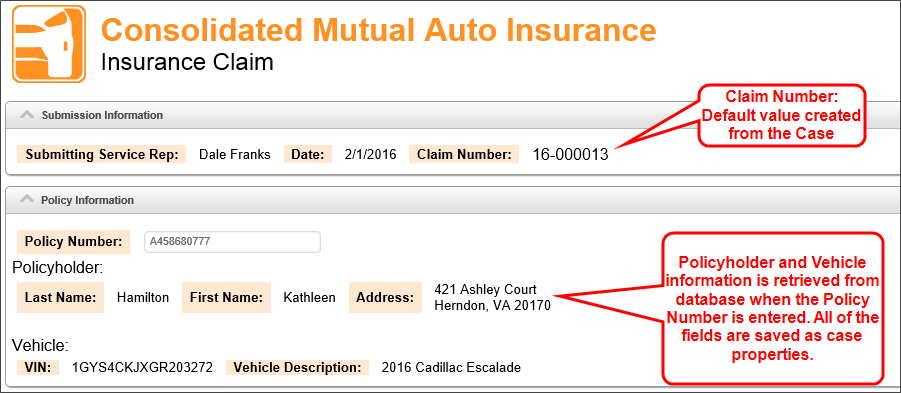
All of the fields for the Policyholder and Vehicle information are disabled and displayed as text on the Form, as we do not want the information edited here. We simply need to display it, and store it to the Case properties. Once the Case properties have been stored, they become the shared data context that can be accessed by any Process Director object that touches the case. When a form instance is saved for any reason, it will update any case instance properties where the form field is configured to point to a case property.
For some Forms, you won't need to store any information to the Case properties, or open a new Case instance, but may still need to associate the Form's data with the case. In the case of the sample project, for example, the Claims Dashboard has buttons in the navigation area to create a new adjuster's report and a new repair estimate. When you open a new adjuster's report or repair estimate from the Claims Dashboard, the new forms are automatically associated with the case. This is a good solution for creating case-related Forms that will only be opened by case workers, in the context of the Case Dashboard.
For Forms that can be submitted by non-case workers, but which must still be associated with the case, you can have the workers set the Case manually by using an AttachKView control on the Form that will force users to select the case before filling out the Form. In the sample project, the Adjuster Inspection Form implements this method of selecting a claim to associate with the Adjuster's Report.
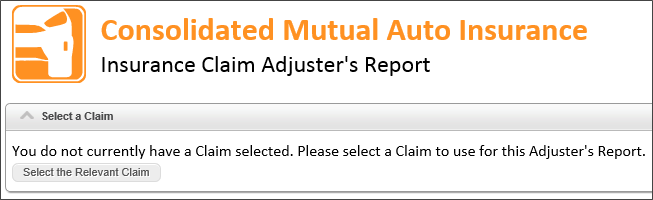
Clicking on the Select a Relevant Claim button opens a Knowledge View that displays the currently active insurance claims. When you select the desired claim from the Knowledge View, the Form switches to the appropriate case context.
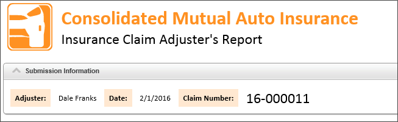
The choice of how to set the case context for the Form—whether by opening the Form from the Case Dashboard, or by allowing users to manually select the Case—is really an issue of how you want to design how users will interact with the case. Process Director supports both methods.
When assigning a form instance to a case instance using the AttachKView control, you can switch the form instance to a different case instance by selecting a different case instance from the picker.
In addition, you can set Case properties manually, or from a Form field, using the Set Case Property Custom task. Additionally, you can add a form instance to a case via configuration on the Form Definition, through a Case Custom Task, etc. If a form instance is being added to a case, Process Director will check all the form fields on the definition for that form instance and see if any form fields are configured to set case properties, and if so, set the case property with the new form's data.
Processes #
Because you associate the Form with the Case, in most cases there are no special configuration settings that need to be set on the Process Timelines or Workflows. The Forms are already "painted" with the case, and some of that "paint" transfers to the processes automatically. The sample project is configured in this way.
There may, however, be times when you do need to associate a process with a case, so there is a Timeline activity type called the Case activity. Please see the documentation on Timeline activity types or Workflow step types for more information about this feature.
Knowledge Views #
On the Options tab of a Knowledge View, you can associate a Case with Knowledge View by choosing the desired case from the Case Definitions Associated with Knowledge View (optional) property.
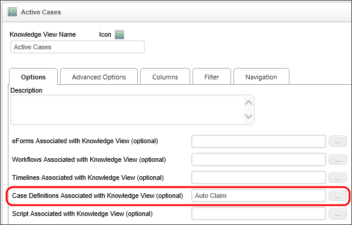
Next, in the Advanced Options tab of the Knowledge View definition, You can configure the Knowledge View to return Case instances. When you do so, clicking on a Case instance in the Knowledge View's results will open the case instance in the Case Dashboard you configure.
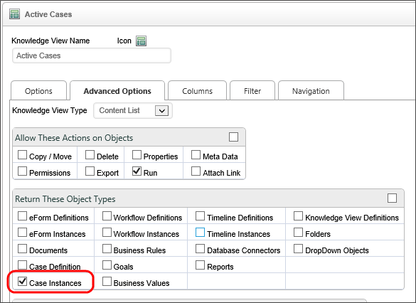
Finally, the Knowledge View's Filter tab is enabled to use Case properties as a Knowledge View filter.
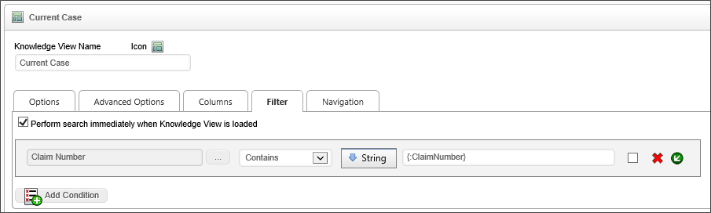
Indeed, the Case properties automatically appear in the Choose System Variable dialog box for use in any condition builder.
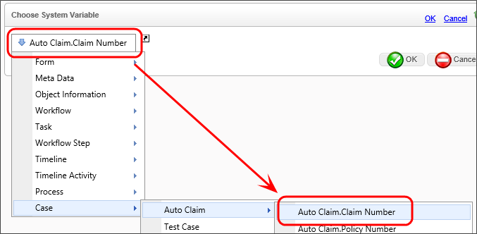
Because Case management requires the use of a Case Dashboard that shows you all of the information relevant to a specific case, you will need to create a number of Knowledge Views that will appear in the Case Dashboard portlets. In the sample Case Management Project, the Claims Dashboard uses two Knowledge Views, Case Reports and Case Estimates, to display all of the Adjuster's Reports and Repair Estimates, respectively, that are associated with the case.
When running a Knowledge View from inside a form that is in a case context, the results of the Knowledge View will be limited to objects in that same case instance.
Administrative Note
When running administrative commands in the process administration interfaces, the commands will run in the context of the case instance of which the process is a member.
Conclusion
Much of the work that is required to match the various objects with a particular Case are done behind the scenes, automatically by Process Director. As long as your Case definition, Forms, and Dashboards are properly configured, Case management should be a relatively seamless process.
See Also:
Case Management Overview
Case Definition